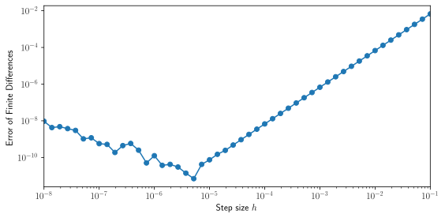

Python is easy to read, but pure-Python loops can be slow if you do not leverage optimized libraries (BLAS, LAPACK). Here we explore two tools—Numba and JAX—to accelerate common linear algebra operations.
4.1 Numba: Just-In-Time Compilation
Numba uses LLVM to compile Python functions to machine code at runtime. Key points:
Decorators: Use @njit (nopython mode) for best speed.
Type inference: Numba infers types on first run, then compiles specialized code.
Compilation overhead: The first call incurs compilation time; subsequent calls are fast.
Object mode vs nopython mode: Always aim for nopython mode to avoid Python object overhead.
JIT Workflow 1. Call function → type inference → LLVM IR generation.
2. LLVM IR → machine code (cached).
3. Subsequent calls use cached machine code.
Example: Matrix–Vector Multiplication
from numba import njitimport numpy as npimport time # for timing@njitdef matvec(A, x): m, n = A.shape y = np.zeros(m)for i inrange(m): temp =0.0for j inrange(n): temp += A[i, j] * x[j] y[i] = tempreturn y# Prepare datadim =500A = np.random.rand(dim, dim)x = np.random.rand(dim)# Using NumPy's dot productstart = time.time()y0 = A @ xend = time.time()print("NumPy time (ms): ", 1e3*(end - start))# Using Numba's compiled functiony0 = matvec(A, x) # First call for compilationstart = time.time()y1 = matvec(A, x)end = time.time()print("Numba time (ms): ", 1e3*(end - start))
NumPy time (ms): 0.3714561462402344
Numba time (ms): 0.3311634063720703
In practice, Numba can speed up this looped version by 10×–100× compared to pure Python, approaching the speed of NumPy’s optimized routines. The reader is encouraged to try the code without the @njit decorator to see the difference in performance.
4.2 JAX: XLA Compilation and Automatic Differentiation
JAX is a high-performance library from Google Research that extends NumPy with just-in-time compilation and automatic differentiation. It - Compiles array operations via XLA, fusing kernels and reducing Python overhead. - Supports GPU and TPU backends with minimal code changes. - Provides grad for gradients of scalar functions, enabling optimisation and machine-learning tasks. - Offers advanced transformations like vmap (vectorisation) and pmap (parallelism on multiple devices).
JAX is widely used in deep learning frameworks (e.g. Flax, Haiku), reinforcement learning, and scientific research (including physics simulations), thanks to its blend of speed and flexibility.
4.2.1 A Quick Overview of Automatic Differentiation
Automatic differentiation (AD) is a family of techniques to compute exact derivatives of functions defined by computer programs. Unlike symbolic differentiation (which can lead to expression swell) or numerical finite-difference (which suffers from truncation and round-off error), AD exploits the fact that any complex function is ultimately composed of a finite set of elementary operations (addition, multiplication, sin, exp, …) whose derivatives are known exactly.
Limitations of Finite Differences
A common finite-difference formula for a scalar function \(f(x)\) is the central difference
with local truncation error \(\mathcal{O}(h^2)\). However, this approach has important limitations:
Truncation vs. round-off: If \(h\) is too large, the \(\mathcal{O}(h^2)\) term dominates. If \(h\) is too small, floating-point cancellation makes the numerator \(f(x+h)-f(x-h)\) inaccurate.
Cost with many parameters: For \(f:\mathbb{R}^n\to\mathbb{R}\), the gradient component \(i\) is
Computing all \(n\) components requires \(2n\) evaluations of \(f\), so the cost scales as \(\mathcal{O}(n)\) in \(f\)-calls. For large \(n\) (many parameters), this becomes prohibitive.
Non-smooth or branching code: When \(f\) contains control flow or non-differentiable operations, finite differences may give misleading or undefined results.
Automatic Differentiation and the Chain Rule
Automatic differentiation (AD) applies the chain rule to each elementary operation in code (addition, multiplication, sin, exp, etc.), yielding exact derivatives up to floating-point precision. For a composition
Forward mode (propagate derivatives from inputs to outputs).
Reverse mode (propagate sensitivities from outputs back to inputs).
JAX implements both and selects the most efficient strategy automatically.
Comparing Accuracy: AD vs Finite Differences
Below is a Quarto code cell that plots the error of finite differences (varying step size \(h\)) and automatic differentiation against the true derivative of \(f(x) = e^{\sin(x)}\) at \(x=1.0\).
import jaximport jax.numpy as jnpimport matplotlib.pyplot as plt # for plotting# Set JAX to use 64-bit floatsjax.config.update("jax_enable_x64", True)# Define function and true derivativedef f_np(x):return np.exp(np.sin(x))def df_true(x):return np.cos(x) * np.exp(np.sin(x))# Point of evaluationx0 =1.0# Finite-difference errors for varying hhs = np.logspace(-8, -1, 50)errors_fd = []for h in hs: df_fd = (f_np(x0 + h) - f_np(x0 - h)) / (2* h) errors_fd.append(abs(df_fd - df_true(x0)))# Automatic differentiation error (constant)df_ad = jax.grad(lambda x: jnp.exp(jnp.sin(x)))(x0)error_ad =abs(np.array(df_ad) - df_true(x0))print(f"AD error: {error_ad}")print(f"FD minimum error: {min(errors_fd)}")# Plotfig, ax = plt.subplots()ax.loglog(hs, errors_fd, marker="o")ax.set_xlabel("Step size $h$")ax.set_ylabel("Error of Finite Differences")# Show in Quartoplt.savefig('_tmp_fig.svg')plt.close(fig)SVG(filename='_tmp_fig.svg')
AD error: 0.0
FD minimum error: 7.006839553014288e-12

This plot illustrates that finite differences achieve minimal error at an optimal \(h\), but degrade for too large or too small \(h\), while AD remains accurate to machine precision regardless of step size.
4.3 Why Computing Gradients Is Important in Quantum Physics
In quantum physics, many problems reduce to optimizing parameters in a model or a control protocol. Computing gradients of a cost function with respect to these parameters is essential for efficient and reliable optimization.
Variational quantum algorithms: In methods like the variational quantum eigensolver (VQE)(Peruzzo et al. 2014), a parametrised quantum state \(|\psi(\boldsymbol{\theta})\rangle\) depends on parameters \(\boldsymbol{\theta}=(\theta_1,\dots,\theta_n)\). One minimises the expectation \[
E(\boldsymbol{\theta}) = \langle\psi(\boldsymbol{\theta})|\hat H|\psi(\boldsymbol{\theta})\rangle.
\]
where \(\mathcal U_T[u]\) is the time-ordered evolution. Computing gradients \(\delta J/\delta u_i(t)\) is needed for gradient-ascent pulse engineering (GRAPE) algorithms. AD can differentiate through time-discretised propagators and ODE solvers, automating derivation of \(\delta J/\delta u_i(t)\) and providing machine-precision gradients for faster convergence.
Parameter estimation and tomography(Lvovsky and Raymer 2009): Maximum-likelihood estimation for quantum states or processes often involves maximising a log-likelihood \(L(\boldsymbol{\theta})\). Gradients speed up estimation and enable standard optimisers (e.g. L-BFGS).
By providing exact, efficient gradients even through complex quantum simulations (time evolution, measurement models, noise), automatic differentiation (via JAX or similar frameworks) has become a key tool in modern quantum physics research.
4.4 Summary
Numba: Best for speeding up existing NumPy loops with minimal code changes. Ideal when you do not need gradients or accelerators.
JAX: Ideal for optimisation tasks requiring gradients, large-scale batch operations, or GPU/TPU acceleration. The XLA compiler often outperforms loop-based JIT for fused kernels.
Khaneja, Navin, Timo Reiss, Cindie Kehlet, Thomas Schulte-Herbrüggen, and Steffen J. Glaser. 2005. “Optimal Control of Coupled Spin Dynamics: Design of NMR Pulse Sequences by Gradient Ascent Algorithms.”Journal of Magnetic Resonance 172 (2): 296–305. https://doi.org/10.1016/j.jmr.2004.11.004.
Lvovsky, A. I., and M. G. Raymer. 2009. “Continuous-Variable Optical Quantum-State Tomography.”Rev. Mod. Phys. 81 (March): 299–332. https://doi.org/10.1103/RevModPhys.81.299.
Peruzzo, Alberto, Jarrod McClean, Peter Shadbolt, Man-Hong Yung, Xiao-Qi Zhou, Peter J. Love, Alán Aspuru-Guzik, and Jeremy L. O’Brien. 2014. “A Variational Eigenvalue Solver on a Photonic Quantum Processor.”Nature Communications 5 (1). https://doi.org/10.1038/ncomms5213.